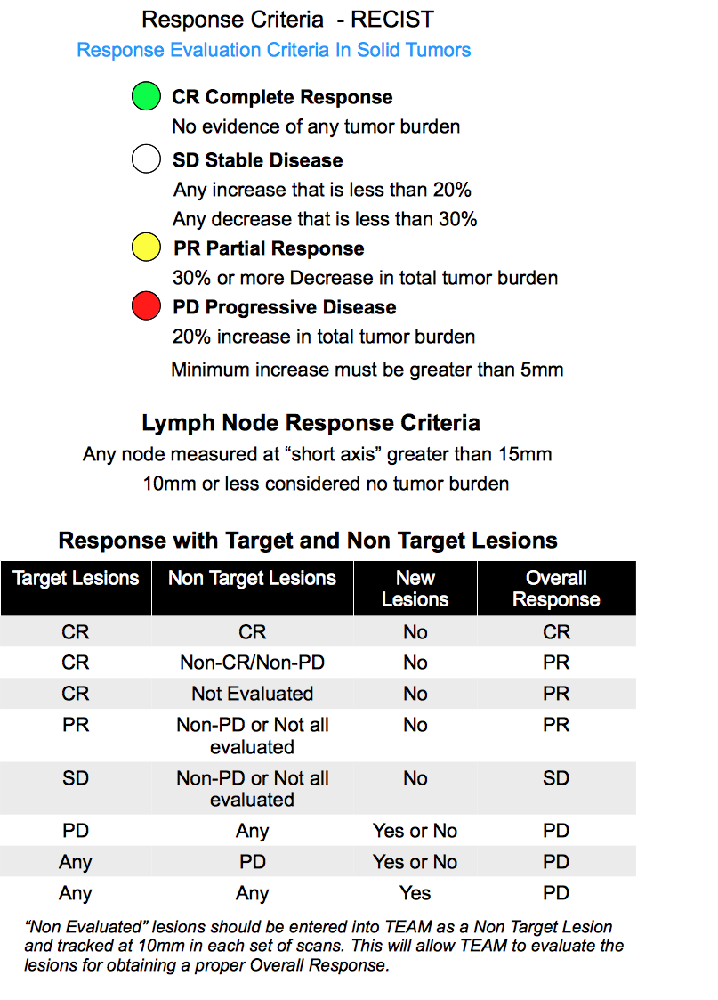

Patient Response
One of the most important part of a study or clinical trial is
the determination of how well a patient is responding to
treatment. One of the ways is to evaluate the individual lesions
from a patient's scans and evaluate them against the baseline of
scans at the beginning of the study or trial.
TEAM has implemented logic based upon the RECIST criteria of
measuring and evaluating whether a patient has responded to
treatment. Additionally TEAM provides you with the capability to
set up a study that will use different percentage
increase/decrease for determining response critieria (i.e. irRC
etc.).
Studies that follow the "Immune Related Response Criteria"
protocol are identified with irrc in the study id. Using irRC, the appearance of new lesions alone does not constitute irPD if they do not add to the tumor burden by at least 25%. Patients with new lesions but an overall tumor burden decrease qualifying for partial response (50% decrease or more) or qualifying for stable disease (<50% decrease to >25% increase) are considered to have irPR or irSD.
The four basic categories of RECIST response include:

To obtain the patient's response evaluation, choose the "Patient
Response Evaluation" icon from the "Patient Data" screen.
Choosing "Patient Response Evaluation"
will direct TEAM to process all of the patients scans and
provide a Summary response. Scans/lesions are compared against
the original baseline scan as well as against the "smallest"
instance of a given lesion since the baseline. This dual
comparison is identified in the RECIST definitions.

All of the lesions (Targeted and Non-Targeted) are initially
displayed in the scrollable view. Each Lesion has 3 lines of
information:
Line 1: (in Grey) Identifies the Lesion type (Targeted/Non
Targeted), Lesion #, and Current Size in mm
Line 2: Identifies the baseline scan date and lesion size at
baseline as well as the overall % increase or decrease from the
baseline
Line 3: Identifies the scan date that this lesion was the
smallest and determines the overall % increase or decrease from
that smallest size.
After the scrollable table, a "Summary" response is provided
based upon RECIST criteria or the custom criteria you may have
set up.
Two lines are included:
Line 1: The current total tumor burden of all of lesions in the
most current scan is compared against the total tumor burden
from the baseline scan. A % increase or decrease from the
baseline is identified and the RECIST response included (i.e.
CR, PR, SD, PD).
Line 2: The current total tumor burden of
all of lesions in the current scan is compared against the total
tumor burden from the smallest instance of each lesion from all
previous scans. A % increase or decrease from the baseline is
identified and the RECIST response included (i.e. CR, PR, SD,
PD).
Full Details of the Response
To obtain a full detailed list of the Response and details
of all of the scans you can click on "Detail".
A little better view of the sample report.....
All of the pertinent information about the patient is included
in the is online report. The scan details are listed with the
most current set of scans at the beginning and the baseline
scans at the bottom. TEAM automatically calculates the "Week
Number" beginning from the baseline scan date being week number
1.
A print button is available in the upper right Tool Bar to allow
you to print via the AirPrint facility. Most current desk top
printers that are WI-FI capable will support AirPrinting of your
report. If you do not have an AirPrint compatible WI-FI printer,
there free software available to enable a Mac or PC to print to
the non-AirPrint printers.